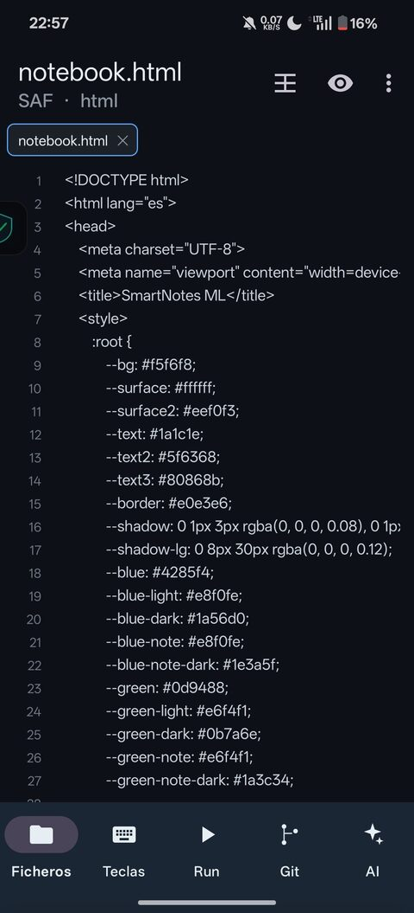
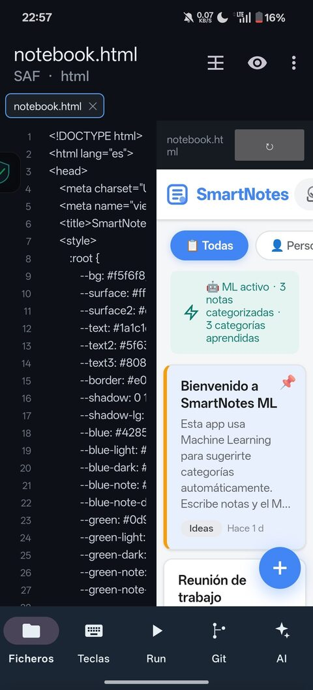
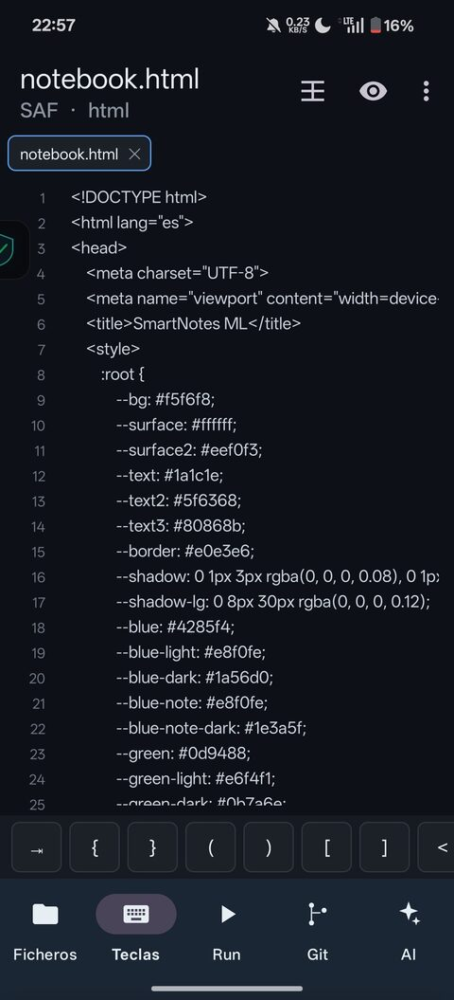
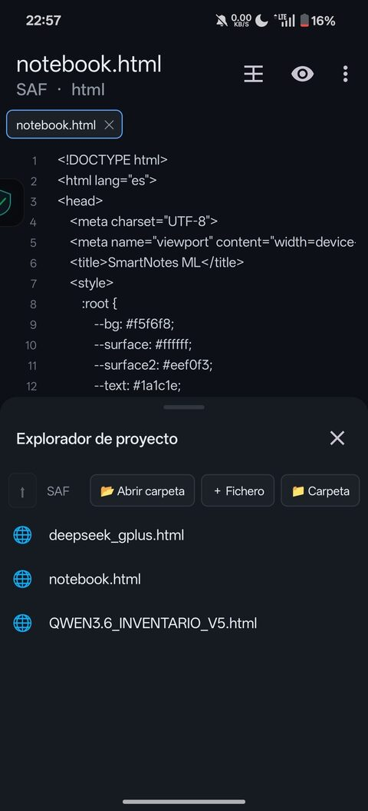
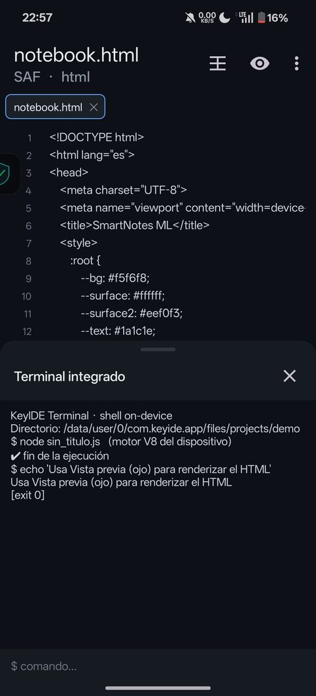
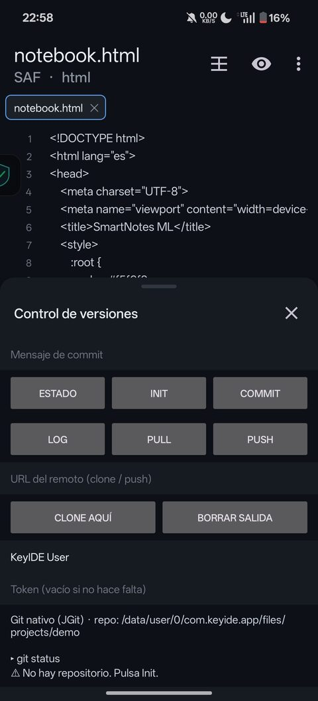
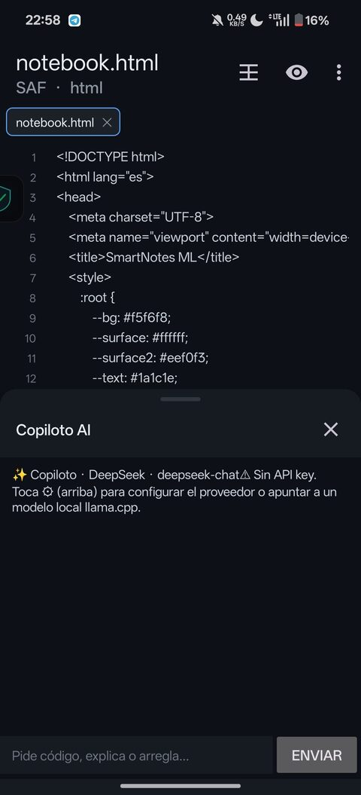

IDE de código ligero para Android: editor con pestañas y autocompletado, vista previa web, ejecución real de JavaScript y Python, terminal, Git y copiloto de IA.
KeyIDE nace de analizar lo que falta en los mejores editores de Android (Acode, Squircle IDE, DroidEdit, Spck, AIDE, CxxDroid, Pydroid) y en los entornos en la nube (Codespaces, Replit). Sus carencias repetidas —multi-archivo real, autocompletado, diagnósticos, terminal, run on-device, Git e IA— son justo lo que KeyIDE cubre.
Interfaz mobile-first: el editor manda y las herramientas viven en bottom sheets deslizables. Con pantalla ancha o en horizontal se activa el split editor | vista previa.
Números de línea, gutter con diagnósticos, resaltado de sintaxis, auto-indentación y auto-cierre de paréntesis/comillas.
LSP-lite: palabras clave del lenguaje + todas las palabras del documento.
Pestañas con buffer independiente e indicador de cambios (●).
JavaScript en el motor V8 (con require local) y Python embebido. Salida en el terminal.
WebView para HTML/CSS/JS/SVG y render de Markdown, o en split lateral.
Sesión de shell persistente: cd y entorno se conservan entre comandos.
JGit: estado, init, commit, log, pull, push y clone, sin binario externo.
DeepSeek, OpenAI, Claude, Qwen, Kimi, GLM y modelo local (llama.cpp).
SAF: abre, navega, crea y edita en cualquier carpeta del dispositivo.
En el documento y en todo el proyecto, con salto a la línea.
Salta a la definición de un nombre dentro del documento o del proyecto.
One Dark, Monokai y Claro; fuente de 10 a 24sp; persistencia de sesión.
Así se ve KeyIDE en un móvil (v0.10.0).







Descarga el último APK desde Releases.
1. Descarga el .apk (o el .zip y descomprímelo)
2. En el móvil: Ajustes → permitir "instalar apps de orígenes desconocidos"
3. Abre el APK e instala
4. Al abrir verás el editor con el proyecto de ejemploRequisitos: JDK 17 y Android SDK 35. Gradle va incluido (wrapper).
git clone https://github.com/aurenox-global/keyide.git
cd keyide
echo "sdk.dir=/ruta/a/Android/Sdk" > local.properties
./gradlew assembleDebug
# APK → app/build/outputs/apk/debug/app-debug.apkChaquopy no tiene pip en el dispositivo: los paquetes se instalan al compilar y viajan dentro del APK.
chaquopy {
defaultConfig {
pip {
install("requests")
// install("numpy")
// install("beautifulsoup4")
}
}
}python { } dentro de android.defaultConfig
no compila en Kotlin DSL; hay que usar chaquopy { } a nivel de proyecto.app/src/main/java/com/keyide/app/
├── MainActivity.kt orquesta todo (documentos, sheets, split, paleta)
├── editor/ CodeEditorView · GutterView · Syntax · EditorTheme · Diagnostic
├── files/ Entry · FilesPanel · WorkspaceRepo (explorador + SAF)
├── terminal/ ShellSession · TerminalPanel (shell persistente)
├── git/ GitPanel · GitClient (JGit)
├── ai/ AiClient · AiPanel (OpenAI/Anthropic)
├── run/ JsRunner (V8 + CommonJS) · PythonBridge (Chaquopy)
├── preview/ PreviewPanel (WebView)
├── settings/ SettingsPanel (proveedor/modelo)
├── palette/ CommandPalette
├── data/ Settings · AiProviders
└── util/ Markdown
app/src/main/python/runner.py helper de ejecución de PythonDecisiones: Views+Material 3 (tamaño/estabilidad), JGit 5.13 (Java 8, compatible Android), SAF para carpetas reales, LSP-lite in-process, y WebView V8 para JS.
require() de módulos locales (mini CommonJS), module.exports, process.Detalle completo en CHANGELOG.md.
MIT © 2026 Andrés Mag. Ver LICENSE.